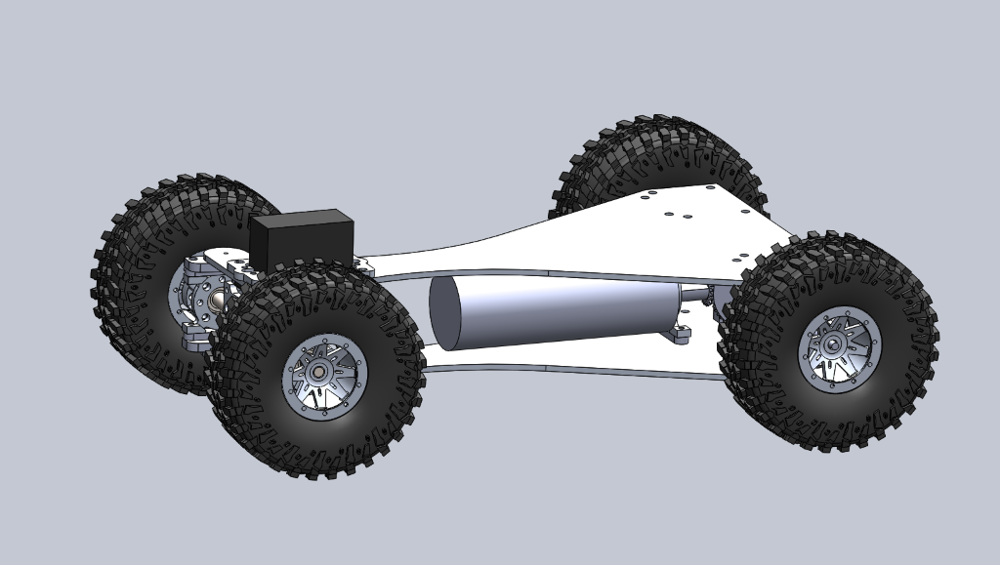
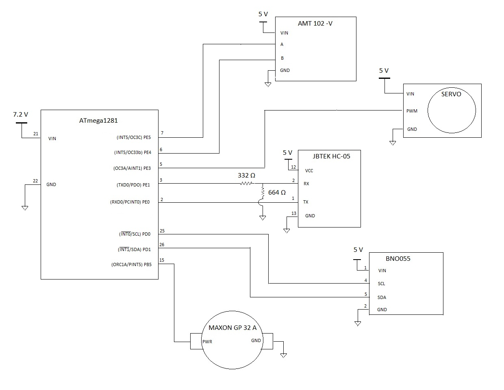
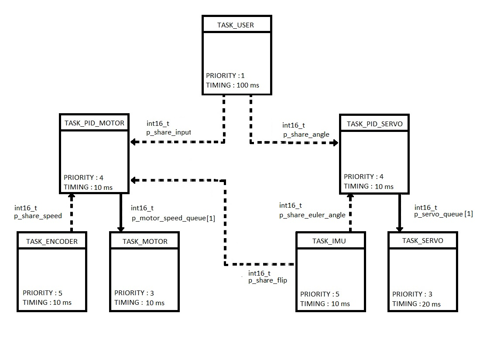

Cal Poly mechatronics project
Bluetooth RC Car With Flip-Aware Controls
Designed, built, wired, programmed, and tested a Bluetooth-controlled RC car that could drive right-side up or upside down by reorienting its controls after a flip.

Goal
The base assignment was to build a car that could autonomously execute simple commands such as driving straight or following a commanded turn. Our added challenge was to make the car keep interpreting commands correctly after flipping over, so a clockwise command still drove clockwise even when the vehicle was upside down.
Mechanical Design
The frame was built from Delrin so the structural plates and supports could be cut from one material. Packaging drove many design decisions: the motor, axles, bearings, board, sensors, servo, and battery all had to fit while staying below the wheel envelope so the car could drive inverted without electronics or hardware dragging on the ground.
- Used large tires to create ground clearance for right-side-up and upside-down operation.
- Designed around a differential and a single lab motor powered by a 7.2 V battery.
- Kept standoffs short and used countersunk screws to pull components closer to the frame plate.
- Mounted the battery between the wheels with Velcro and zip ties so it stayed secure but serviceable.
- Reworked breadboard placement and wiring with short leads and 90-degree bends to keep electronics inside the rollover envelope.
Controls and Electronics
The control system used an ATmega1281 with Bluetooth communication, encoder feedback, IMU orientation sensing, motor drive output, and servo steering. Before writing drivers, the team mapped pinouts and registers from component datasheets so the lab code could be reused on the full vehicle.
The software architecture separated user commands, motor PID, servo PID, encoder, IMU, motor output, and servo output into tasks with defined timing and shared data. The flip behavior used orientation data from the IMU to reinterpret commands when the vehicle was upside down.
Testing and Results
We tested the physical package by driving the car both right-side up and upside down, then flipping it over in different ways to confirm that components survived the transition and stayed clear of the ground. In ramp testing, the first version stuttered and did not always continue forward after rollover; after code revisions, the car could flip on the ramp and continue driving as expected.
- Met the base driving goal, including straight-line driving and commanded steering angles.
- Bluetooth control consistently sent commands to the car.
- Implemented the flip modification so the car could reorient driving after multiple rollovers.
- Did not complete closed-loop servo PID control, so steering could not fully correct itself if it drifted off path.
Project Media



Takeaway
This project was a useful early mechatronics lesson because the hard parts were not isolated to CAD, electronics, or code. The car only worked when packaging, wiring, sensor data, register-level configuration, physical testing, and debugging all came together as one system.